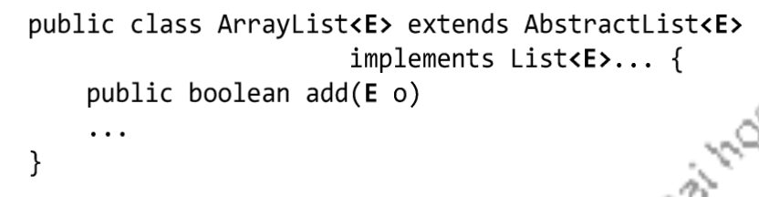
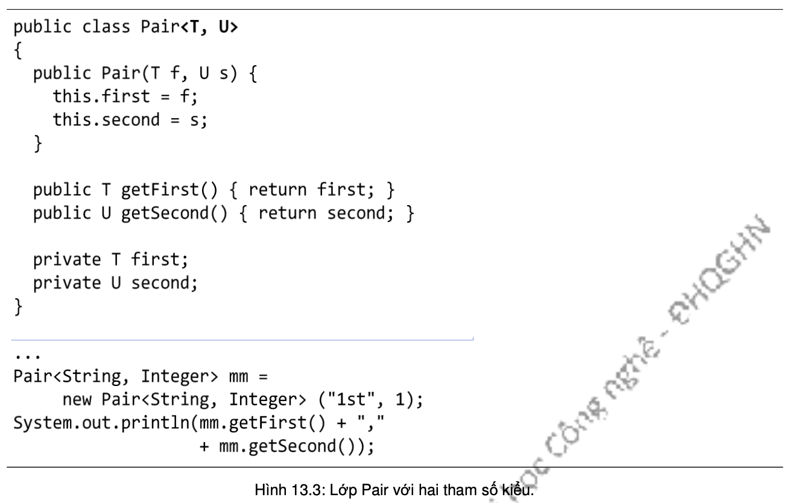

Lớp tổng quát là lớp mà trong khai báo có ít nhất một tham số kiểu. Lớp ArrayList mà ta đã gặp ở các chương trước là một ví dụ về lớp tổng quát trong thư viện chuẩn của Java. Một đối tượng ArrayList về bản chất là một mảng động chứa các tham chiếu kiểu Object. Do lớp nào cũng là lớp con của Object nên ArrayList có thể lưu trữ mọi thứ. Không chỉ vậy, ArrayList còn sử dụng một khái niệm của Java là "tham số kiểu", như ở ArrayList<String>, để giới hạn các giá trị có thể được lưu trong phạm vi một kiểu dữ liệu nhất định. Ta sẽ dùng ArrayList làm ví dụ để nói về việc sử dụng các lớp collection này.
Khi tìm hiểu về một lớp tổng quát, có hai điểm quan trọng:
Cụ thể đối với ArrayList, dòng khai báo lớp mà ta có thể thấy trong tài liệu API như sau:
Dòng khai báo trên cho biết các thông tin sau: "E" đại diện cho kiểu của các phần tử ta muốn lưu trữ trong ArrayList, là kiểu dữ liệu được dùng để tạo một đối tượng ArrayList. Ta hình dung tất cả các lần xuất hiện của "E" trong khai báo lớp ArrayList được thay bằng tên kiểu dữ liệu đó. Lần xuất hiện thứ hai của E, Abstract<E>, cho biết kiểu dữ liệu được chỉ định cho ArrayList sẽ được tự động trở thành kiểu dữ liệu được chỉ định cho AbstractList – lớp cha của ArrayList. Lần xuất hiện thứ ba, List<E>, cho biết kiểu dữ liệu được chỉ định cho ArrayList cũng tự động được chỉ định cho kiểu của interface List. Lần xuất hiện thứ tư, add(E o), cho biết kiểu mà E đại diện là kiểu dữ liệu ta được phép chèn vào đối tượng ArrayList. Nói cách khác, khi tạo một đối tượng ArrayList, ta thay thế "E" bằng tên kiểu dữ liệu thực (kiển tham số) mà ta sử dụng. Vậy nên phương thức add(E o) không cho ta chèn thêm vào ArrayList bất cứ cái gì ngoài các đối tượng thuộc kiểu tương thức với "E".
Hình 13.3 là ví dụ đầy đủ về một lớp tổng quát với hai tham số kiểu T và U, và một đoạn mã sử dụng lớp đó. Pair là lớp đại diện cho các đối tượng chứa một cặp dữ liệu thuộc hai kiểu dữ liệu nào đó. T đại diện cho kiểu dữ liệu của biến thực thể thứ nhất, U đại diện cho kiểu dữ liệu của biến thực thể thứ hai.
Khi ta khai báo một đối tượng kiểu Pair, ta cần chỉ rõ giá trị của hai tham số kiểu T và U. Trong ví dụ, ta tạo đối tượng kiểu Pair<String, Integer>, có nghĩa T được quy định là kiểu String, U là kiểu Integer. Dẫn đến việc ta có thể hình dung như thể tất cả các lần xuất hiện của T trong định nghĩa lớp Pair được hiểu là String, và tất cả các lần xuất hiện của U được hiểu là Integer.
T và U là hai tham số kiểu khác nhau, nên ta có thể tạo Pair với hai kiểu dữ liệu bất kì, có thể khác nhau nhưng cũng có thể giống nhau, chẳng hạn Pair<Cow, Cow>.
Các tên T và U thực ra có thể là bất cứ cái tên nào theo quy tắc đặt tên biến của Java, nhưng theo quy ước chung, người ta dùng các kí tự viết hóa cho tên các tham số kiểu.
Như vậy, về cơ bản, ta đã biết cách tạo đối tượng của một lớp tổng quát. Ta cũng biết được cách viết một lớp tổng quát. Tuy nhiên, ta không chú trọng vào việc viết lớp tổng quát vì Java API đã cung cấp Collection Framework với các cấu trúc dữ liệu đa dạng thỏa mãn nhu cầu của các ứng dụng nói chung. (Ta sẽ nói đến các cấu trúc đó trong chương này.) Các lập trình viên hầu như không cần phải viết thêm các lớp tổng quát mới để sử dụng.